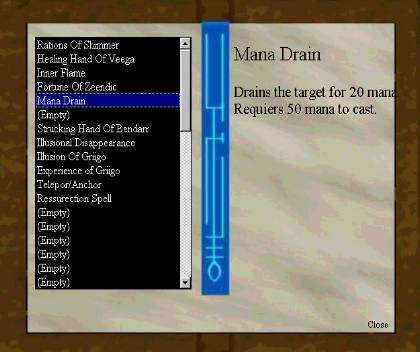

As any other fantasy game, Era Online has magic ! Note that the spell
system in Era Online isn`t that well developed yet, but we are working on making
it better. Remember that the game still is in beta ! Let me begin...
There are 6 classes in Era Online that can cast spells. All other classes will
not be able (for now) to specialize in a school of magic. School of magic ?
Thats the type of magic each spell is catagorized in. There are three schools
of magic; Enchanting, Nature & Destruction. Here are the classes that can
cast spells, and what school of magic they specialize in:
Cleric (Nature), Healer (Nature), Paladin (Enchanting),
Druid (Nature), Wizard (Destruction), Enchanter (Enchanting).
Note that only the Druid, Wizard and the Enchanter starts with a very
high amount of mana. The other classes start with considerably lower
amount of mana.
How do you achive spells and how do you use them ? You can get any
spell by buying them at a mage, or by finding them or in any other way
get a hold of the spell scrolls. When you got a spell scroll, USE it in your
inventory and it will be inscribed to your spell book. There is 1 or more
letters in two brackets after the spell name in your inventory. These are
letters for the schools of magic that can cast this spell. N means Nature,
E means Enchanting and D means Destruction. Now, target a player or
creature you wish to cast the spell on, and then open your spell book and
RIGHT CLICK on the spell you want to cast in the spell book, and select
CAST SPELL. The spell will then be cast on the target if you have enough
mana, and the mana will be substracted from your mana pool.
How do you regain mana ? Simple, type /MEDITATE and you will begin
meditating and slowly regain mana. The better meditation skill you have,
the faster it goes. You cannot move while meditating. Type /MEDITATE
again to stop meditating.

This is the spell book. On the left side you can see the list of your spells. On
the right side you can see a description of the spell currently marked. To cast
a spell on your target, right click on the spell and select CAST SPELL. The
spell will now be cast ! Note that if you cast destructive spells on other players,
you will become a criminal (see the Being A Criminal section).
Wasn`t that easy ? Yeah. We will develop the magic system much more further
by time.